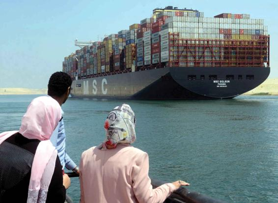

Since the turn of the twentieth century, modern capitalist economies have been more and more influenced by the rise of large business corporations, particularly those in financial services such as banks, stock brokerages, and investment funds. While manufacturing remains important in the U.S. economy, representing about 9 percent of the U.S. workforce and 13 percent of U.S. GNI, the corporations with the largest assets are now banks (Scott, 2015).
The world economy is increasingly influenced by the rise of large business corporations. In 2019, the 2,000 largest corporations in the world had total annual revenues of more than $40 trillion, and assets valued at $186 trillion. According to one estimate, this represents half the value of all officially measured assets on the world combined. The two largest economic sectors, banking and finance, account for nearly three-fifths of total assets. The largest bank in the world is the Industrial and Commercial Bank of China, with more than $4 trillion in assets (Ponciano and Hansen, 2019; Fortune, 2019b; Shorrocks, Davies, and Lluberas, 2019b; Desjardins, 2019). The power of the financial services sector was seen in the financial collapse of 2007–2008, when large financial institutions paid the price for making risky (so-called “subprime”) loans in housing and other sectors. When this financial bubble collapsed because the loans could not be repaid, it threatened to take down the entire U.S. economy—a crisis that was averted only when the government stepped in and provided bailout loans for major banks and corporations that were deemed “too big to fail” in terms of their widespread economic impact.
Of course, there still exist thousands of smaller firms and enterprises within the American economy. In these companies, the image of the entrepreneur—the boss who owns and runs the firm—is by no means obsolete. The large corporations are a different matter. Ever since Adolf Berle and Gardiner Means published their celebrated study The Modern Corporation and Private Property (1982; orig. 1932), it has been accepted that those who own most of the largest firms do not actually run them. In theory, large corporations are the property of their shareholders, who have the right to make all important decisions. But Berle and Means argue that because share ownership is so dispersed, actual control has passed into the hands of the managers who run the firms on a day-to-day basis. Ownership of corporations is thus separated from their control.
Whether owners or managers run them, major corporations have extensive power. When one or a handful of firms dominate in a given industry, they often cooperate in setting prices rather than freely competing with one another. Thus, the giant oil companies normally follow one another’s lead in the price charged for gasoline. When one firm occupies a commanding position in a given industry, it is said to be in a monopoly position. More common is a situation of oligopoly, in which a small group of giant corporations predominates. In situations of oligopoly, firms are able more or less to dictate the terms on which they buy goods and services from the smaller firms that are their suppliers.
The emergence of the global economy has contributed to a wave of corporate mergers and acquisitions on an unprecedented scale, exceeding $3.3 trillion in 2018. Three of the largest mergers and acquisitions involved pharmaceuticals (Cigna acquired Express Scripts for $68.5 billion) and telecommunications (AT&T acquired Time Warner for $85 billion, and T-Mobile acquired Sprint for $58.7 billion) (Stebbins, 2018a; Gold and Schneider, 2018). The previous year, the drug store chain CVS’s merger with health insurer Aetna was valued at $69 billion, while Amazon’s acquisition of Whole Foods (for $13.7 billion) signaled that the online retail giant was moving into the grocery business (Stebbins, 2018b). The resulting giants are seen as oligopolies that critics predict will restrict consumer choice and ultimately raise prices. AT&T, Comcast, Verizon, Walt Disney Corporation, 21st Century Fox, and CBS Corporation are among the world’s biggest media and communication corporations; all are based in the United States (although the largest telecom company, in terms of subscribers, is China Telecom) (Parietti, 2019).
Chinese firms are rapidly getting into the mergers and acquisitions game (Shepard, 2016). At first, Chinese state-owned firms were the primary players, buying up energy and commodities companies to power the country’s factories: Two state-owned Chinese energy firms—Sinopec (the world’s second-largest corporation in 2019, based on revenues) and China National Petroleum (the fourth largest)—had gone on a global shopping spree in 2014, acquiring part or complete ownership of Chesapeake Energy (U.S.), Petrobras Energia (Peru), Apache Corporation (U.S.), ENI East Africa (Mozambique), and the Kashagan oilfields (Kazakhstan) (China.org.cn, 2014). Since then, Chinese firms, including private entrepreneurs, have shifted their focus from raw materials to brands and technology, purchasing the Finnish game maker behind Clash of Clans and Boom Beach, as well as Italian football team AC Milan (Bloomberg, 2017).
A number of factors have contributed to this trend, including technological advances, which have lowered global transportation and communications costs; a relaxation of regulation of corporate business activities; and new and efficient ways of financing and pooling the large sums of capital needed to conduct a merger or acquisition. One of the primary aims of the recent wave of business consolidations has been to eliminate direct competition and productive overcapacity. Overcapacity is a problem that occurs when businesses produce more goods than the market will consume. Following the logic of supply and demand, overcapacity leads to a decline in the value of the goods produced and to a decline in profits. Consolidation of firms is an attempt to avoid this problem.
Transnational Corporations
With the intensifying of globalization, most large corporations now operate in an international economic context. When they establish branches in two or more countries, they are referred to as transnational corporations. Swiss researchers identified more than 43,000 transnational corporations networked together across the globe in 2007 (although the study has not been replicated with more recent data, its findings would most likely be similar today). They found that only 147 of these corporations controlled almost 40 percent of the total monetary value of the entire network; 737 firms accounted for 80 percent. The top 50 firms were primarily financial institutions such as Barclays, JPMorgan Chase, and Merrill Lynch, which strongly suggests that the financial services industry has a great deal of power and influence in the global economy (Vitali, Glattfelder, and Battiston, 2011).
The largest transnationals are gigantic; their wealth outstrips that of many countries (Table 14.2). The scope of these companies’ operations is staggering. The combined revenues of the world’s 500 largest transnational corporations totaled $32.7 trillion in 2018 (Fortune, 2019a). Walmart alone, the world’s largest corporation, had 2018 revenues of more than a half trillion dollars ($514 billion). To give an idea of the magnitude of that number, in 2018, $86 trillion in goods and services was produced by the entire world (World Bank, 2020c).
The United States is home to the largest number of firms among the top 500 transnational corporations, although the share of American-based companies has fallen sharply in recent years as the number of transnational corporations based in other countries—especially Asian countries such as China and Japan—has increased. In 2005, the United States had 176 companies among the Global 500; in 2018, the number had declined to 121. China has moved in the opposite direction: It had only 16 companies among the top in 2005, and none among the top 10. Today, it boasts 119, including 3 among the top 10 (DuBois, 2011; Colvin, 2019).
Transnational corporations have assumed an increasingly important place in the world economy over this century. They are of key importance in the international division of labor—the specialization in producing goods for the world market that divides regions into zones of industrial or agricultural production or high- or low-skilled labor (Fröbel, Heinrichs, and Kreye, 1979; McMichael, 1996). Just as national economies have become increasingly concentrated—dominated by a limited number of very large companies—so has the world economy. In the case of the United States and several of the other leading industrialized countries, the firms that dominate nationally also have a wide-ranging international presence. Many sectors of world production (such as agribusiness) are oligopolies. Over the past two or three decades, international oligopolies have developed in the automobile, microprocessor, and electronics industries and in the production of some other goods marketed worldwide.
Table 14.2CORPORATE GLOBALIZATION: THE WORLD’S 50 LARGEST ECONOMIES (IN BILLIONS OF DOLLARS) (2018)*
1
United States
$20,494.1
26
Thailand
$505.0
2
China
$13,608.2
27
Austria
$455.7
3
Japan
$4,970.9
28
Norway
$434.8
4
Germany
$3,996.8
29
Sinopec
$414.6
5
United Kingdom
$2,825.2
30
United Arab Emirates
$414.2
6
France
$2,777.5
31
Nigeria
$397.3
7
India
$2,726.3
32
Royal Dutch Shell
$396.6
8
Italy
$2,073.9
33
China National Petroleum
$393.0
9
Brazil
$1,868.6
34
State Grid
$387.1
10
Canada
$1,709.3
35
Ireland
$375.9
11
Russian Federation
$1,657.6
36
Israel
$369.7
12
Korea, Rep.
$1,619.4
37
South Africa
$366.3
13
Australia
$1,432.2
38
Singapore
$364.2
14
Spain
$1,426.2
39
Hong Kong SAR, China
$363.0
15
Mexico
$1,223.8
40
Saudi Aramco
$355.9
16
Indonesia
$1,042.2
41
Malaysia
$354.3
17
Netherlands
$912.9
42
BP (British Petroleum)
$303.7
18
Saudi Arabia
$782.5
43
Exxon Mobil
$290.2
19
Turkey
$766.5
44
Volkswagen
$278.3
20
Switzerland
$705.5
45
Toyota Motor
$272.6
21
Poland
$585.8
46
Apple
$265.6
22
Sweden
$551.0
47
Berkshire Hathaway
$247.8
23
Belgium
$531.8
48
Amazon.com
$232.9
24
Argentina
$518.5
49
United Health Group
$226.2
25
Walmart
$514.4
50
Samsung Electronics
$221.6
*The European Union (EU) is actually the world’s second-largest economy, with combined GNI totaling $18.7 trillion in comparison with the United States’ $20.6 trillion. In this table, however, we consider the European countries separately, since the EU does not function entirely as a single economy. The world economy as a whole has a combined GNI of $85.8 trillion. By this measure (GNI), the US, European Union, and China account for more than three-fifths (62%) of total world GNI.
SOURCES: Fortune, 2019a; World Bank, 2020c.
A major force behind globalization, containerization allows for the rapid movement of goods around the world.
The reach of the transnationals since the mid-1970s would not have been possible without advances in transportation and communications. Air travel now allows people to move around the world at a speed that would have seemed inconceivable even 60 years ago. Technological innovations allowing containerization have permitted the rapid movement and distribution of bulk goods around the world. The best example of containerization is the development of intermodal transport, which involves moving huge containers around the world by means of a combination of truck, rail, ship, and sometimes air. The containers, which are typically 40 feet in length and may carry as much as 30 tons of goods, are loaded at the factory (for example, in China) where the goods are produced. They are then lifted onto the beds of trains or 18-wheeler trucks and hauled to a modern container port (for example, Shanghai, the world’s busiest container port), where they are stacked like Legos by electronically controlled robot cranes, until they are ready to be loaded onto giant container ships. The world’s largest container ship, the MSC Gülsün, was launched in August 2019. It is a quarter mile long, slightly more than 200 feet wide, approximately 20 stories high, and can carry 23,800 20-foot containers—enough to stretch nearly 90 miles if placed end to end. This ship, built for the Swiss-owned Mediterranean Shipping Company by Hyundai Heavy Industries, a Korean transnational corporation, might take a little over two weeks to cross the Pacific from Shanghai to Los Angeles, where the containers would be unloaded, placed on a truck or train, and hauled to Walmart or some other retail outlet.
The global corporations have become the first organizations able to plan on a truly world scale. Apple, McDonald’s, and Coca-Cola ads reach billions. A few companies with developed global networks are able to shape the commercial activities of diverse nations. One useful way to think about this is through a typology developed by Richard Barnet and John Cavanagh (1994). In their view, there are four webs of interconnecting commercial activity in the new world economy. These are what they call the global cultural bazaar, the global shopping mall, the global workplace, and the global financial network.
The global cultural bazaar is the newest of the four but already the most extensive. Global images and global dreams are diffused through movies, TV programs, music, videos, games, toys, and T-shirts, sold on a worldwide basis. All over the earth, even in the poorest developing countries, people use the same electronic devices to see or listen to the same commercially produced songs and shows. When Apple releases a new iPhone, crowds form at Apple stores from Beijing to Baltimore.
The global shopping mall is a “planetary supermarket with a dazzling spread of things to eat, drink, wear and enjoy,” according to Barnet and Cavanagh. It is more exclusive than the global cultural bazaar because the poor do not have the resources to participate—they have the status only of window shoppers. Of the nearly 7.7 billion people who make up the world’s population, nearly three out of five lack the cash or credit to purchase any consumer goods.
Bringing in more than $2.81 billion in worldwide ticket sales, Avengers: Endgame became one of the highest grossing films of all time, due in large part to its strong international appeal: the film grossed nearly $2 billion internationally, especially in China, where it broke all records for its first five days ($331 million).
The third global web, the global workplace, is the increasingly complex global division of labor that affects all of us. It consists of the massive array of offices, factories, restaurants, and millions of other places where goods are produced and consumed or information is exchanged.
This web is closely bound up with the fourth web—the global financial network, which it fuels and is financed by. The global financial network consists of billions of bits of financial information stored in computers and portrayed on computer screens. It entails almost endless currency exchanges, credit card transactions, insurance plans, and buying and selling of stocks and shares.
The Twenty-First-Century Corporation: Different from Its Twentieth-Century Counterpart
There are considerable differences between the large corporation of the early twenty-first century and its mid-twentieth-century counterpart. Many of the names are the same—General Electric, General Motors, Ford, IBM, AT&T—but these have been joined by other giant firms, largely or completely unknown in the 1950s, such as Walmart, Microsoft, Apple, Google, Facebook, and Intel. They all wield great power, and their top executives typically still inhabit the large buildings that dominate so many cities.
But below the surface similarities between today and half a century ago, some profound transformations have taken place. The origin of these transformations lies in a process we have encountered often in this book: globalization. Since the 1950s, the giant corporations have become more and more caught up in global competition; as a result, both their internal composition and, in a way, their very nature have altered. Nearly thirty years ago, former U.S. labor secretary (now University of California-Berkeley economics professor) Robert Reich (1991) wrote:
Underneath, all is changing. America’s core corporation no longer plans and implements the production of a large volume of goods and services; it no longer invests in a vast array of factories, machinery, laboratories, inventories, and other tangible assets; it no longer employs armies of production workers and middle-level managers. . . . In fact, the core corporation is no longer even American. It is, increasingly, a façade, behind which teems an array of decentralized groups and subgroups continuously contracting with similarly diffuse working units all over the world.
The large corporation is less a big business than an “enterprise web”—a central organization that links together smaller firms. IBM, for example, which used to be one of the most jealously self-sufficient of all large corporations, joined with dozens of U.S.-based companies and more than 80 foreign-based firms in the 1980s and early 1990s to share strategic planning and cope with production problems. Nelson Lichtenstein (2006), a labor historian who spent many years studying Walmart, has characterized this as a shift from General Motors to Walmart, which he describes as “a template for twenty-first-century capitalism”:
GM workers were often life-time employees so factory turnover was exceedingly low: these were the best jobs around, and they were jobs that rewarded longevity. . . . At Wal-Mart, in contrast, employee turnover approaches 50 percent a year, which means it must be even higher for those hired at an entry level wage. . . . The hours of labor, the very definition of a full work day, constitutes the other great contrast dividing America’s old industrial economy from that of its retail future. . . . At Wal-Mart a 32 hour work week is considered “full time” employment. This gives managers great flexibility and power, enabling them to parcel out the extra hours to fill in the schedule, reward favored employees, and gear up for the holiday rush. But the social consequences of this policy are profound: Unlike General Motors, Wal-Mart is not afraid to hire thousands of new workers each year, but employee attachment to their new job is low, and millions of Americans find it necessary, and possible, to moonlight with two part time jobs.
Walmart, Lichtenstein points out, provides us with a steady stream of low-cost products, making it possible for millions of Americans of limited means to feed and clothe their families. Walmart thus permits many Americans to enjoy a lifestyle of consumption that would otherwise not be possible. The giant retailer also provides jobs, although most are not nearly as well paying as the millions of manufacturing jobs that have been lost in recent years.
The one place where jobs have been gained, and in large numbers, is in the emerging economies of the developing world. Manufacturing has boomed in China, where 250 to 300 million workers labor under harsh conditions, in millions of factories that turn out everything from running shoes to flat-panel TVs to smartphones. China’s factories provide the goods that are sold in Walmart’s thousands of U.S. stores, linking the economies of both countries tightly together. In turn, Walmart’s global supply chains, along with those of all corporations that design, make, and sell products today, link the world in a web of production networks that now reach every place on the planet. For better or worse, the personal lives and work lives of all of us—indeed, of all people everywhere—are increasingly intertwined.
Some corporations remain strongly bureaucratic and centered in the United States. However, most are no longer so clearly located anywhere. The old transnational corporation used to work mainly from its American headquarters, from where its overseas production plants and subsidiaries were controlled. Now, with the transformation of space and time noted earlier (Chapter 5), groups situated in any region of the world are able, via telecommunications and computer, to work with others. Nations still try to influence the flow of information, resources, and money across their borders, but modern communication technologies make this more and more difficult, if not impossible. Knowledge and finances can be transferred across the world as electronic blips moving at nearly the speed of light.
Even the production of the technology that makes the global activities of transnational corporations possible is spread out over the globe. With revenues of $71 billion in 2018, the California-based computer chip manufacturer Intel dominates the global personal computer microchip industry, boasting a global workforce of 107,400 employees, slightly more than half of them outside the United States (Intel, 2019). Its six wafer-fabrication plants (so-called fabs) and three assembly-test facilities are found in the United States, China, Ireland, Israel, Malaysia, and Vietnam, although its most advanced facilities—the ones working with the smallest chips—are in the United States and Israel (Intel, 2019). Intel is especially interested in China, where it has been operating laboratories, manufacturing facilities, and testing facilities for more than 20 years. Its chip fabrication plant in Dalian, China, was the first such plant the company has located in an emerging economy. The reason China was selected? Not low labor costs (chip fabrication depends on expensive equipment rather than cheap labor), but rather China’s growing supply of talented engineers, along with generous financial incentives provided by the Chinese government (Parker and Appelbaum, 2012; Appelbaum et al., 2018).